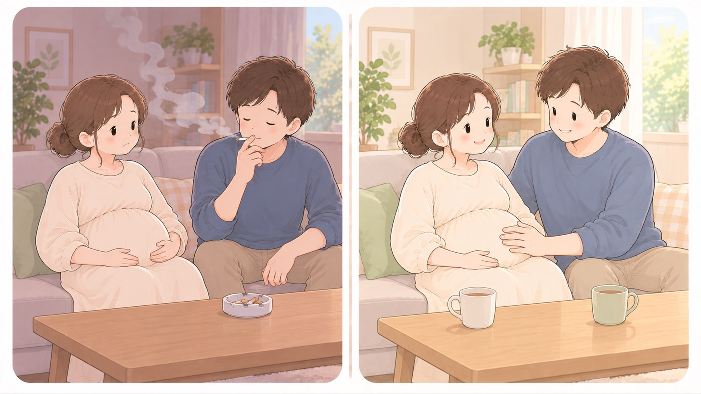

やめる
たばこをやめる
妊娠中のリスクに加えて、生まれた後の乳幼児突然死症候群の要因にもなる
母子健康手帳は、妊娠中の喫煙が切迫早産、前期破水、常位胎盤早期剥離のリスクを高め、胎児の発育に悪影響を与えると書いています。それに加えて、たばこは乳幼児突然死症候群の発生要因のひとつとされています。自分が吸うことも、周りの人が吸った煙を吸うことも、生まれた後の要因になります。

左は危険な例、右は安全な例です。- すること：同居する人も、あわせてやめる
赤ちゃんのそばにいる人が吸うと、乳幼児突然死症候群の発症率が高くなります。子どもに関わるすべての大人が対象です。 - すること：生まれた後も続ける前提で考える
妊娠中だけやめて、産後に戻すのでは、生まれた後の要因が残ります。 - しないこと：妊婦のいる部屋で吸わない
周りの人が吸ったたばこの副流煙を妊婦が吸う受動喫煙も、生まれた後の乳幼児突然死症候群の発生要因になります。 - しないこと：お酒も、全期間を通じて飲まない
アルコールは胎児の発育、とくに脳の発達に悪影響を与えます。出産後も、授乳中は控えます。
この項目の根拠
- 母子健康手帳 任意様式「すこやかな妊娠と出産のために」（こども家庭庁 母子健康手帳情報支援サイト・PDF）（新しいタブで開きます）
妊娠中の喫煙は切迫早産、前期破水、常位胎盤早期剥離のリスクを高め、胎児の発育に悪影響を与えること。たばこは乳幼児突然死症候群（SIDS）の発生要因のひとつであるといわれており、乳幼児の周囲でだれかがたばこを吸うことは乳幼児突然死症候群の発症率を高くすることがわかっていること。妊婦自身の喫煙、まわりの人が吸ったたばこの副流煙を妊婦が吸う受動喫煙も生まれた後に乳幼児突然死症候群の発生要因になること。こどもに関わるすべての大人は喫煙をやめること。アルコールも胎児の発育（特に脳の発達）に悪影響を与えるため妊娠中は全期間を通じて飲酒をやめ、出産後も授乳中は飲酒を控えること。 - 赤ちゃんが安全に眠れるように ～1歳未満の赤ちゃんを育てるみなさまへ～（こども家庭庁）（新しいタブで開きます）
たばこも乳幼児突然死症候群の発症要因のひとつであるといわれていること、赤ちゃんのそばにいる人がたばこを吸うことはその発症率を高くすること、こどもに関わるすべての大人は喫煙をやめること。